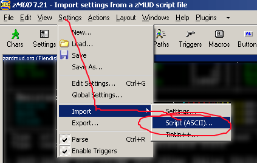
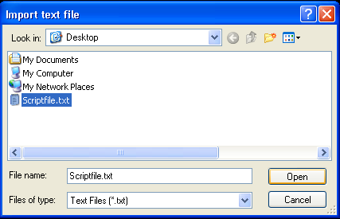
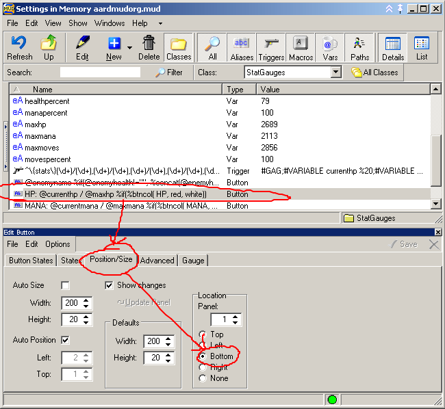

Fiendish's HP/Mana/Moves/Enemy Status Gauges for zMUD
Tested to work in zMUD 7.21 on Windows XP. Not guaranteed to work in other versions or system configurations.
What this script does:
- Produces gauges like shown below to display your current HP, Mana, Moves, and Enemy HP Percentage (if in combat) as colored bars
New in the August 29, 2008 update:
- The stat_enemyname variable now only contains the enemy name instead of also including a colon. This makes the variable more generic but should not otherwise change the functionality of the script.
New in the August 22, 2008 update:
- The enemy HP gauge would previously lose the enemy name if you got bashed (or otherwise rested) during combat. This was because I had stupidly made a change from the original script thinking that the change wouldn't have any affect on the gauges. This was clearly wrong. Thanks to Bremen for catching this.
New in the August 14, 2008 update:
- I think the bug where some people were seeing empty/grey gauges has finally been fixed. Thanks to Mahony for this one.
New in the August 06, 2008 update:
- Just a minor precautionary change. The statmon capture is a little bit more specific just to prevent possible future issues that are very extremely unlikely to ever happen. So unlikely, in fact, that you're more likely to win the state lottery twice in a row, because the problem scenario would require more than a dozen new fields added to statmon in a very specific format. But, you know, just in case, right?. Thanks to Abelinc for the suggestion.
New in the August 05, 2008 update:
- The statmon capture should now accept mob names with punctuation in them. Reported by Sleipner.
- Variable names were changed to be a bit more unique to the script, just in case.
Download the script here: StatGauges.zip
IF YOU DO NOT INSTALL THIS SCRIPT AS DESCRIBED BELOW YOU WILL BE SORRY.
------------ BEGIN INSTRUCTIONS ------------
This script installs a class named "StatGauges" after deleting existing classes of the same name.
If any of your scripts conflict with this class name, they must be removed first or they'll be removed for you.
To install the script go to the Settings menu in zMUD, then go to "Import" and choose "Script (ASCII)..."

Then select the text file containing the script, in this case StatGauges.txt, and click Open

The script then installs your new gauges and enables statmon.
The gauges should look something like this...

(Note: I've moved mine to the bottom. There's no way to do this in the script, sorry, so you'll have to move them manually as shown below.)

If you have questions, feel free to send tells.
- Fiendish